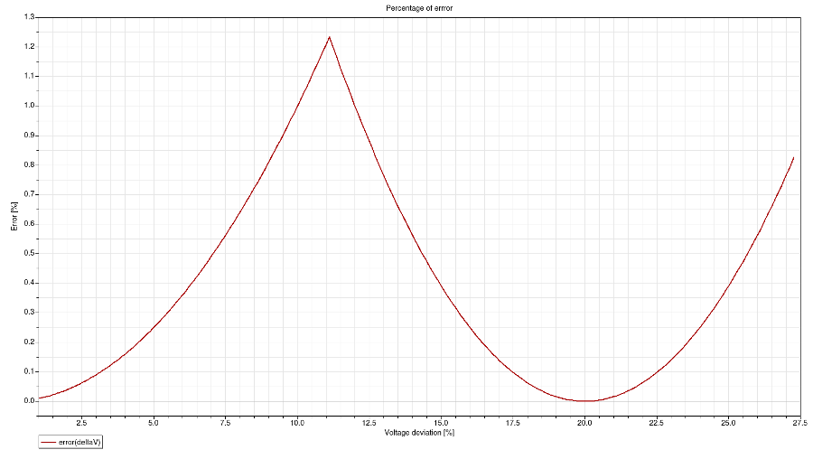
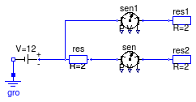
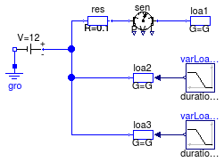

Package with example models
This package contains examples for the use of models that can be found in Buildings.Electrical.DC.Loads.
Extends from Modelica.Icons.ExamplesPackage (Icon for packages containing runnable examples).
| Name | Description |
|---|---|
| Example model to check the linearized load model | |
| Example model for resistor | |
| Example using variable loads models |
 Buildings.Electrical.DC.Loads.Examples.LinearizedLoad
Buildings.Electrical.DC.Loads.Examples.LinearizedLoad
Example model to check the linearized load model

This example demonstrates the use of a linealized load model Buildings.Electrical.DC.Loads.Conductor.
Both loads are connected to the same DC voltage source through a resistive element that represents a line. The loads consume the same amount of power that is specified by the input ramp signal.
The nonlinear conductor model NonlinearLoad consumes exactly the amount of power specified by the input NonlinearLoad.Pow.
The linearized conductor model LinearizedLoad does not consumes the amount of power specified by the input LinearizedLoad.Pow. The voltage at the load deviates from the nominal value when the power consumption increases. Since the model is approximated in a neighbor of the nominal voltage, moving from that point introduces approximation errors. The plot below shows the error introduced with such an approximation.

The linearized load is tested over a voltage variation of about 30 % of the nominal voltage and within this range the maximum error is 1.23457 % that occurs when the voltage deviation is 11.11 %.
Extends from Modelica.Icons.Example (Icon for runnable examples).
Buildings.Electrical.DC.Loads.Examples.Resistor
Example model for resistor

This example demonstrates the use of the resistor model.
Extends from Modelica.Icons.Example (Icon for runnable examples).
Buildings.Electrical.DC.Loads.Examples.VariableLoad
Example using variable loads models

This example shows how to use three different types of load models. Each load is of type Buildings.Electrical.DC.Loads.Conductor.
The first load loa1consumes a constant amount of power.
The second and the third loads (loa2 and loa3) consume a variable amount of power.
The load loa2 has a variable input y between 0 and 1 that specifies the portion of
nominal power that is consumed.
The load loa3 has a variable input Pow that represents the actual power consumed
(or produced) by the load.
Extends from Modelica.Icons.Example (Icon for runnable examples).